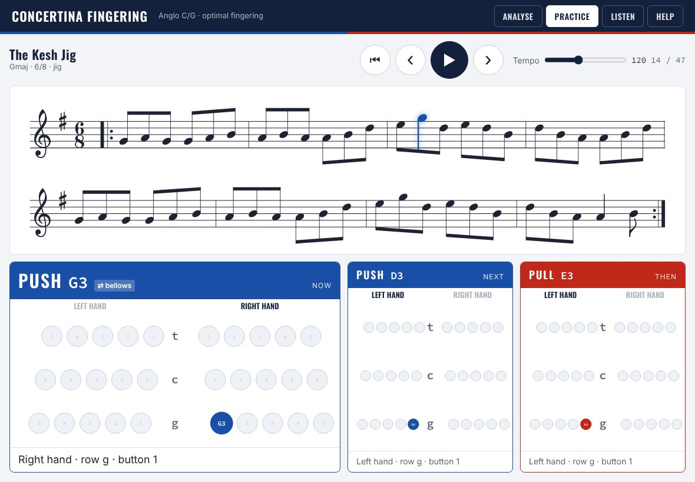

Find the best fingering for your Anglo concertina
Paste a tune in ABC notation and see which button to press for every note, and whether to push or pull. Then practise it with the sheet music, playback and the buttons on one screen.

How it works
2Get the easiest route
On a 30-button C/G Anglo most notes can be played in more than one place. The tool finds the route with the fewest jumps between hands and the fewest needless changes of bellows direction.
3Practise
Put a tablet on your music stand: the sheet music, the note you play now and the next two notes, with playback at your own tempo.
What you get
A table with the hand, row, button and bellows direction for every note, and a diagram of the whole keyboard that also shows the good alternatives.
The sheet music plays as written, with note lengths, rests and repeats. Tap a note to start from there.
Free and private
The tool runs entirely in your browser: no sign-up, nothing is uploaded. It also works with your own button layout if your instrument differs.
Want to check a note by ear? The Listen page shows which buttons play the note you sound.